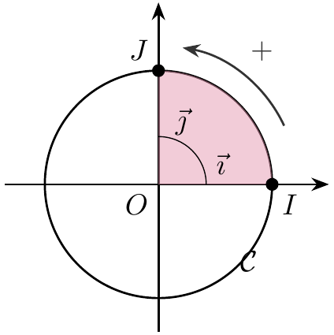
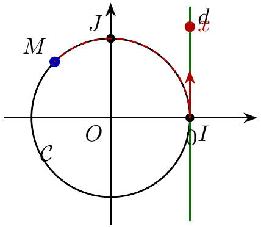
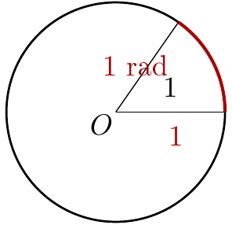
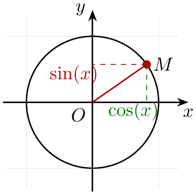
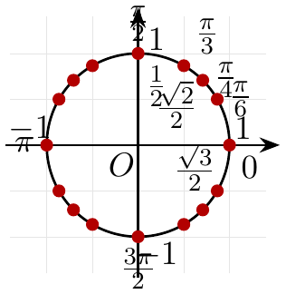
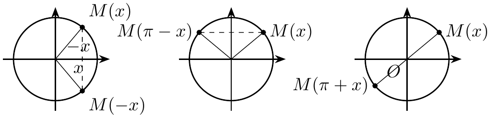

Chapitre 6 : Trigonométrie
Première spécialité · Chapitre 6 — Trigonométrie · cours de Frederik de Peyrelongue
I. Le cercle trigonométrique
Le cercle trigonométrique de centre $O$ est un cercle qui a pour rayon $1$ et qui est muni d'un sens direct : le sens inverse des aiguilles d'une montre.
- le sens direct (ou positif ou trigonométrique) est contraire au sens de rotation des aiguilles d'une montre ;
- le sens indirect (ou négatif) est le sens de rotation des aiguilles d'une montre.
Le point $J$ est placé pour que $\widehat{IOJ}$ soit positif comme sur la figure ci-contre.

Remarque : l'arc $IJ$ inclus dans le secteur angulaire saillant $\widehat{IOJ}$ (coloré en violet) est parcouru dans le sens positif.
II. Enroulement de la droite autour du cercle trigonométrique
À chaque nombre réel $x$ de la droite numérique, on associe un unique point $M$ du cercle trigonométrique, que l'on appelle point image.

- La mesure d'angle d'un tour est $2\pi$ (la circonférence d'un cercle unité).
- Deux nombres réels $x$ et $x'$ de la droite numérique ont le même point image sur $\mathcal{C}$ si et seulement si $x=x'+k\times 2\pi$ avec $k\in\Z$.
- Chaque angle possède une infinité de mesures (en radians) qui diffèrent d'un multiple de $2\pi$.
Preuve : l'idée de la démonstration repose sur le fait que le périmètre du cercle trigonométrique a pour longueur $2\pi$. Pour tout point $M$ du cercle, on peut alors calculer la longueur de l'arc $\overset{\frown}{IM}$ ou bien « parcourir » plusieurs fois le cercle jusqu'à revenir au point $M$. La longueur « parcourue » sera donc augmentée de $2\pi$ à chaque tour. En parcourant le cercle dans le sens indirect, on obtient les valeurs négatives.
Remarque : on dit que $x$ et $x'$ sont égaux à $2\pi$ près, ou modulo $2\pi$.
En remarquant que
on en déduit que $\pi$, $3\pi$ et $-5\pi$ ont le même point image sur le cercle trigonométrique : le point de coordonnées $(-1\,;0)$.
III. Angle en radian
On considère le cercle trigonométrique $\mathcal{C}$.
Le radian est la mesure d'un angle au centre qui intercepte sur $\mathcal{C}$ un arc de longueur $1$.
Le radian est noté rad.

Les mesures en radians sont proportionnelles aux mesures en degrés. D'où le tableau de proportionnalité :
| Angle en degré | $0$ | $30$ | $45$ | $60$ | $90$ | $180$ | $270$ | $360$ |
| Angle en radian | $0$ | $\dfrac{\pi}{6}$ | $\dfrac{\pi}{4}$ | $\dfrac{\pi}{3}$ | $\dfrac{\pi}{2}$ | $\pi$ | $\dfrac{3\pi}{2}$ | $2\pi$ |
Soient $M(y)$ et $N(x)$, deux points du cercle trigonométrique associés aux nombres réels $x$ et $y$.
Pour tous nombres réels $x$ et $y$, l'angle $\widehat{MON}$ mesure $(y-x)$ radian(s).
Remarque : ce n'est pas la seule mesure de cet angle.
Tout point du cercle trigonométrique est l'image d'une infinité de nombres réels. Si $x$ est l'un d'entre eux, les autres nombres réels sont de la forme $x+2k\pi$, où $k\in\Z$.
Quels que soient les nombres réels $x$ et $y$, les mesures de l'angle $\widehat{MON}$ sont :
On note
ou encore
Les angles $\dfrac{\pi}{3}$ ; $\dfrac{7\pi}{3}$ ; $\dfrac{13\pi}{3}$ et tous les angles de la forme $\dfrac{\pi}{3}+2k\pi$ ont même image sur $\mathcal{C}$.
Mesure principale d'un angle
Parmi toutes les mesures d'un angle orienté, il en existe une et une seule qui appartient à l'intervalle $\left]-\pi\,;\pi\right]$ : elle s'appelle la mesure principale de cet angle.
IV. Cosinus et sinus
Définition et propriété
On considère un réel $x$ ayant pour point image le point $M$ sur le cercle trigonométrique.
- L'abscisse du point $M$ est appelée cosinus de $x$. On la note $\cos(x)$.
- L'ordonnée du point $M$ est appelée sinus de $x$. On la note $\sin(x)$.

Remarque : cette notion généralise la notion vue au collège. En effet, on note $A$ le projeté de $M$ sur l'axe des abscisses et $B$ le projeté de $M$ sur l'axe des ordonnées. Le triangle $OAM$ est rectangle, et on a
Remarque :
- L'abscisse et l'ordonnée de $M$ sont comprises entre $-1$ et $1$, car $M$ est sur le cercle trigonométrique : on en déduit que le sinus et le cosinus sont compris entre $-1$ et $1$.
- Le triangle $OAM$ est rectangle : on peut appliquer Pythagore et on en déduit que $\sin^{2}(x)+\cos^{2}(x)=1$.
Pour tout $x$ réel,
Tableau des valeurs à connaître
| angle | $0$ | $\dfrac{\pi}{6}$ | $\dfrac{\pi}{4}$ | $\dfrac{\pi}{3}$ | $\dfrac{\pi}{2}$ | $\pi$ | $\dfrac{3\pi}{2}$ | $2\pi$ |
| $\cos(x)$ | $1$ | $\dfrac{\sqrt{3}}{2}$ | $\dfrac{\sqrt{2}}{2}$ | $\dfrac{1}{2}$ | $0$ | $-1$ | $0$ | $1$ |
| $\sin(x)$ | $0$ | $\dfrac{1}{2}$ | $\dfrac{\sqrt{2}}{2}$ | $\dfrac{\sqrt{3}}{2}$ | $1$ | $0$ | $-1$ | $0$ |

V. Propriétés
| $\cos(-x)=\cos x$ | $\sin(-x)=-\sin x$ |
| $\cos(\pi-x)=-\cos x$ | $\sin(\pi-x)=\sin x$ |
| $\cos(\pi+x)=-\cos x$ | $\sin(\pi+x)=-\sin x$ |
Justification :

- Les angles de mesures $x$ et $-x$ sont symétriques par rapport à l'axe des abscisses. Par symétrie, on en déduit que : $\cos(-x)=\cos x$ et $\sin(-x)=-\sin x$.
- Les angles de mesures $x$ et $\pi-x$ sont symétriques par rapport à l'axe des ordonnées. Par symétrie, on en déduit que : $\cos(\pi-x)=-\cos x$ et $\sin(\pi-x)=\sin x$.
- Les angles de mesures $x$ et $\pi+x$ sont symétriques par rapport à l'origine. Par symétrie, on en déduit que : $\cos(\pi+x)=-\cos x$ et $\sin(\pi+x)=-\sin x$.
| $\cos\left(\dfrac{\pi}{2}-x\right)=\sin x$ | $\sin\left(\dfrac{\pi}{2}-x\right)=\cos x$ |
| $\cos\left(\dfrac{\pi}{2}+x\right)=-\sin x$ | $\sin\left(\dfrac{\pi}{2}+x\right)=\cos x$ |
| $\cos(x+2\pi)=\cos x$ | $\sin(x+2\pi)=\sin x$ |
VI. Équations trigonométriques
Équations de la forme $\cos x=a$, $a\in\R$
1er cas : $|a|>1$. Pas de solution, car, pour tout $x$, $-1\leqslant\cos(x)\leqslant 1$.
2ème cas : $-1<a<1$. Deux solutions dans l'intervalle $\left]-\pi\,;\pi\right]$ :
et, dans $\R$, les solutions sont l'ensemble
3ème cas : $a=1$. Une unique solution dans $\left]-\pi\,;\pi\right]$ : $x=0$, et, dans $\R$, les solutions sont l'ensemble
4ème cas : $a=-1$. Une unique solution $x=\pi$ dans $\left]-\pi\,;\pi\right]$, et, dans $\R$, les solutions sont l'ensemble
Équations de la forme $\sin x=a$, $a\in\R$
1er cas : $|a|>1$. Pas de solution, car, pour tout $x$, $-1\leqslant\sin(x)\leqslant 1$.
2ème cas : $-1<a<1$. Deux solutions dans l'intervalle $\left]-\pi\,;\pi\right]$ :
et, dans $\R$, les solutions sont l'ensemble
3ème cas : $a=1$. Une unique solution dans $\left]-\pi\,;\pi\right]$ : $x=\dfrac{\pi}{2}$, et, dans $\R$, les solutions sont l'ensemble
4ème cas : $a=-1$. Une unique solution $x=-\dfrac{\pi}{2}$ dans $\left]-\pi\,;\pi\right]$, et, dans $\R$, les solutions sont l'ensemble
Équations de la forme $\cos x=\cos(a)$, $a\in\R$
Alors
Soit $S$ l'ensemble des solutions de l'équation $\cos x=\cos a$, alors
Équations de la forme $\sin x=\sin(a)$, $a\in\R$
Alors
Soit $S$ l'ensemble des solutions de l'équation $\sin x=\sin a$, alors